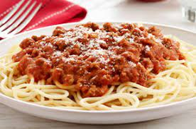

<!DOCTYPE html>
<html lang="en">
<head>
    <meta charset="UTF-8">
    <meta http-equiv="X-UA-Compatible" content="IE=edge">
    <meta name="viewport" content="width=device-width, initial-scale=1.0">
    <link rel="stylesheet" href="../styles.css">
    <title>Spaghetti Recipe</title>
</head>
<body>
    
</body>
</html>
<h1 class="title">Spaghetti</h1>



<h3 class="title">Kraft Spaghetti</h3>
<p class="text">Spaghetti, spice mix and parmesan cheese. 
Just add tomato paste (1-6 oz can). With Kraft Spaghetti Classics, 
a homemade dish like your Mom made is only minutes away - 
all you need to do is add tomato paste to the specially blended, tangy herbs and spices. 
Kraft Spaghetti Classics will help you make a great-tasting meal your whole family will love!</p>

<h4 class="header">Ingredients</h4>
  <ul class="text">
    <li>12 Cups of Water</li>
    <li>1 Package Kraft Spaghetti Mix</li>
    <li>1 6 oz can of tomato paste</li>
  </ul>

<h4 class="header">Step by Step Instructions</h4>
  <ol class="text">
    <li>Bring the 12 cups of water to Boil in large saucepan</li>
    <li>When water starts to boil add spaghetti and turn off burner</li>
    <li>Add Tangy Italian mix and tomato paste. Stir in with spaghetti</li>
    <li>Put lid on pan but leave a small opening for steam to escape</li>
    <li>Let mix sit for 20-30 minutes and then bring to simmer and enjoy</li>
  </ol>